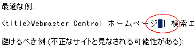
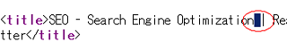

半角の縦棒線のブログＳＥＯ効果
半角記号にはなんとかラインというのがありますが、そのうちのひとつにたてのぼっこで、こんなの「｜」があると思うんです。これの読み仮名は知らないんですが、ブログのＳＥＯを考える際にこの半角記号はどうなんだろって気がするんです。
この縦線の記号「｜」には半角と全角の記号があるのですが、ブログタイトルや記事タイトルでよく仕切り線として使用されているのをみかけます。
たとえば、このブログでも「ＳＥＯ対策 | 無料ブログ」というような感じで、使用している箇所もところどころあったりするんです。
ぶっちゃけ、どっちでもいいじゃんって気もするんですが、やっぱ半角スペースとか半角記号を使用しているサイトが多いので、どのような使い方をすればＳＥＯ的にいい感じなのかって迷っちゃうんです。
検索エンジンロボットは英語圏生まれ？
ブログのＳＥＯ対策といえば、やっぱ、検索エンジンでの上位表示によるアクセスアップということだと思いますが、その検索エンジンのスパイダーロボットはたぶん、英語圏で生まれたものが多いと思うんです。
グーグルは検索エンジンで有名ですが、たぶん、英語圏で生まれた検索エンジンだと思います。少なくとも日本生まれじゃないって思うんです。
なので、そもそもが英語の文字列を検索してたんだと思うんですけど、やっぱ、英語の場合は半角スペースがないと、正直意味がわかんなくなっちゃうってことが多いと思うんです。
日本語の場合は単語と単語の間にスペースを入れたら、みずらくってしょうがないですが、英語の場合は逆になかったら意味がわかんないって思います。
そんなこんなで、検索エンジンの無料ブログＳＥＯ対策をする場合に、半角記号や半角スペースもけっこう大切な要素になる気がしてならないんです。
特にＳＥＯ的に最も重要といわれるタイトルタグには、半角のたてぼっこ「｜」を使用することが多いんで、ぶっちゃけどうなんだろって気がします。
ブログＳＥＯ的に半角縦ラインの正しい使い方
ＳＥＯ的に半角縦ライン「|」の正しい使い方はどうなっているんだろうと思い、グーグルヘルプを参照してみました。
TITLE タグと ALT 属性の説明をわかりやすく正確なものにする。
ここで紹介されているタイトルタグの最適な例というのを見てみると、どうやら半角スペースの間に半角の縦棒線「|」が入っており全角ではないみたいです。

次にブログＳＥＯといえば、seomoz も人気なんで、ＳＥＯのもさたちはどんな感じで使ってるんだろうと見てみました。
seomoz でもどうやら、半角の縦ライン「|」を半角スペースでサンドイッチする形で使用しているみたいです。seomoz で半角を使ってるんならやっぱ、全角じゃなくて、半角を使用した方がいいっぽいような気もしちゃいます。

さらに、ヤフーでのウェブオーナーヘルプを見てみましたが、ソースを参照してみると、どうやらヤフーでは半角たて棒線「|」のかわりに、半角ハイフン「-」を使用しているものの、使い方はやっぱ、半角スペースの間に挟みこむような形でしようしているみたいです。
Yahoo!ウェブオーナーセンター ヘルプ（※2013年9月30日サービス終了）
そんなこんなで、やっぱ、半角の縦棒線や半角ハイフンを使用する場合は、半角スペースの間にはさみこんでサンドイッチする使用方法が正しい使い方なのではないかなという気がします。
わたしは今まで、一応は半角の記号を使用していたことは使用していたのですが、半角スペースの間にはさみこんではいなかったので、スペースを空けてみようかなと思います。
ただ、ぶっちゃけ、そんなちっちゃいことでブログＳＥＯ的な効果にはどうなんだろって気もしますが、どちらかというと、半角スペースの間にはさんだ記号の使い方の方が見やすい気もするんです。
ブログ作成の場合には取り入れてみるといいんじゃないかなって気がします。
- アフィリエイトブログのSEO対策 | ４つの注意点
アフィリエイトをしている際のブログのＳＥＯ対策ですが、アフィリエイトブログの場合は通常のブログと比べて、ＳＥＯ的に不利な面もあるかと思います。 以前にもアフィリエイトページは一括にするべきなんじゃな... - SEO的なアンカーテキストのタイトルタグ作成
無料ブログの記事タイトルってどのくらいの長さがSEO的いいのかって思うんですけど、やっぱ、多少長めの記事タイトルの方がいいような気がするんです。タイトルタグのなかにキーワードを２、３個しのばせたような... - 品質の高い無料ブログ作成でＳＥＯ対策
無料ブログのＳＥＯ対策もあれこれあると思いますが、最近アドワーズの品質スコアというのが気になってきています。アドワーズの品質スコアは広告のリンク先ページのサイト品質をはかるものらしく、それによって広告...